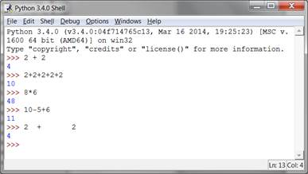
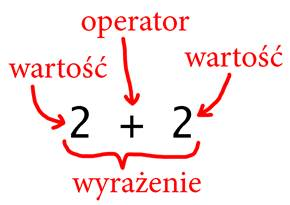
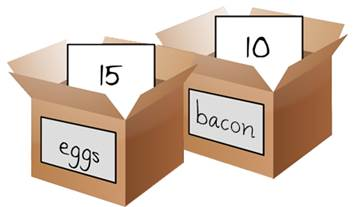

|
|
Rozdział 2 |
Powłoka Interaktywna |

Tematy omówione w tym rozdziale:
· Liczby całowite i zmiennoprzecinkowe
· Wyrażenia
· Wartości
· Operatory
· Obliczanie wyrażeń
Nim zaczniesz tworzyć gry, musisz nauczyć się kilku podstawowych rzeczy w programowaniu. W tym rozdziale nie stworzymy gry, ale nauczenie się tych podstaw jest pierwszym krokiem do ich tworzenia. Rozpoczniemy od nauki używania interaktywnej powłoki Pythona.
Trchę prostych operacji matematycznych
Uruchom IDLE jak to omówiliśmy w pierwszym rozdziale. Teraz pozwolimy Pythonowi wykonać kilka prostych operacji matematycznych. Interaktywna powłoka może działać tak, jak kalkulator. Wpisz 2 + 2 w interaktywnej powłoce i wciśnij klawisz enter (na niektórych klawiaturach ten klawisz ma napis return). Rysunek 2-1 pokazuje jak IDLE odpowiada liczbą 4.

Rysunek 2-1: Wprowadź 2+2 w powłoce interaktywnej.
Ten problem matematyczny jest prostym programem. Znak + mówi komputerowi by dodać liczby 2 i 2. Tabela 2-1 pokazuje inne symbole matematyczne dostępne w Pythonie. Znak - będzie odejmował liczby. Znak * (gwiazdka) będzie je mnożył. Znak / będzie je dzielił.
Tabela 2-1: Różne operatory matematyczne w Pythonie.
|
Operator |
Operacja |
|
+ |
dodawanie |
|
- |
odejmowania |
|
* |
mnożenie |
|
/ |
dzielenie |
Kiedy ich tak używamy +, -, * i / są nazywane operatorami. Operatory mówią Pythonowi jakie operacje matematyczne Python ma wykonać na liczbach jakie sąsiadują z operatorem.
Liczby całkowite i zmiennoprzecinkowe
W programowaniu liczby całkowite, to liczby takie jak 4, 99 i 0. Liczby zmiennoprzecinkowe mają część ułamkową jak 3.5, 42.1 i 5.0 (stosujemy tu zapis anglosaski, z kropką oddzielającą część dziesiętną, w Polsce przecinek jest znakiem oddzielającym część dziesiętną). W Pythonie liczba 5 jest liczbą całkowitą, ale 5.0 jest liczbą zmiennoprzecinkową.
Wyrażenia
Te operacje matematyczne są przykładami wyrażeń. Komputery mogą rozwiązywać miliony takich problemów w ciągu sekundy. Wyrażenia składają się z wartości (liczb) połączonych operatorami (znakami matematycznymi). Nauczmy się dokłądnie czym są wartości i operatory. Spróbuj wpisać niektóre z tych wyrażeń w interaktywnej powłoce i naiskaj enter po wprowadzeniu każdej z nich.
2+2+2+2+2
8*6
10-5+6
2 + 2
Po wpisaniu tych instrukcji powłoka interaktywna będzie wyglądałą jak na rysunku 2-2.

Rysunek 2-2: Jak wygląda okno IDLE po wprowadzeniu instrukcji.

Rysunek 2-3: Wyrażenie składa się z wartości i operatorów.
Wyrażenie składa się z wartości (takich jak liczby 8 i 6) połączonych operatorem (takim jak znak * oznaczający mnożeni). Samodzielna wartość także jest wyrażeniem. W przykładzie 2 + 2 zwróć uwagę że można użyć dowolnej liczby spacji pomiędzy wartościami, a operatoramis. Jednak nie wstawiaj spacji na początku instrukcji jaką wprowadzasz w interaktywnej powłoce.
Obliczanie wyrażeń
Kiedy komputer rozwiązuje wyrażenie 10 + 5 i otrzymuje wartość 15, to mówimy o obliczaniu wyrażeń. Obliczanie wyrażeń reduje je do pojedynczej wartości, tak jak rozwiązanie problemu matematycznego redukuje problem do jednej liczby: odpowiedzi. Wyrażenia 10 + 5 i 10 + 3 + 2, zarówno oceny do 15.
Wyrażenia mogą być dowolnego rozmiaru, ale zawsze zostaną wyliczone do pojedynczej wartości. Nawet pojedyncza wartość jest wyrażeniem: wyrażenie 15 jest wyliczane do 15. Dla przykładu wyrażenie 8 * 3 / 2 + 2 + 7 - 9 zostanie wyliczone do wartości 12.0 w następujących krokach:
8 * 3 / 2 + 2 + 7 – 9
▼
24 / 2 + 2 + 7 – 9
▼
12.0 + 2 + 7 – 9
▼
14.0 + 7 – 9
▼
21.0 – 9
▼
12.0
Nie zobaczysz wszystkich tych kroków w interaktywnej powłoce. Powłoka je wykona i pokaże wynik:
>>> 8 * 3 / 2 + 2 + 7 - 9
12.0
Zwróć uwagę, że operator dzielenia / daje wartość zmiennoprzecinkową, więc 24 / 2 daje 12.0. Dale, operacje matematyczne z udziałem liczb zmiennoprzecinkowych także daja liczby zmiennoprzecinkowe, więc 12.0 + 2 daje 14.0.
Błędy składni
Jeśli w interaktywnej powłoce wprowadzisz 5 + , to dostaniesz komunikat o błędzie.
>>> 5 +
SyntaxError: invalid syntax
(“SyntaxError: invalid syntax” jest “BłądSkładni: nieprawidłowa składnia” w języku angielskim.)
Stało się tak ponieważ 5 + nie jest wyrażeniem. Wyrażenia mają wartości połączone operatorami. Operator + spodziewa się wartości po znaku +. Komunikat o błędzie pojawia się gdy ta wartość się nie pojawi.
Bład składni (SyntaxError) oznacza, że Python nie rozumie instrukcji, ponieważ wpisałeś ją nieprawidłowo. programowanie to nie tylko mówienie komputerowi co ma zrobić, ale także wiedza, jak dokładnie mu to powiedzieć.
Nie martw się jeśli zrobisz pomyłkę. Błędy nie zniszczą twojego komputera. Po prostu wpisz ponownie prawidłową instrukję w powłoce interaktywnej przy kolejnym znaku zachęty >>>.
Zapisywanie wartości w zmiennych
Często będziesz chciał zachować obliczone wyrażenie by użyć go później w programoe. Takie wartości możesz zapisywać w zmiennych. Wyobraź je sobie jako pudełka, które mogą przechowywać wartości.
Często będziesz chciał zachować obliczone wyrażenie by użyć go później w programoe. Takie wartości możesz zapisywać w zmiennych. Wyobraź je sobie jako pudełka, które mogą przechowywać wartości.
Instrukcja przypisania zachowa wartość (lub wartość do jakiej zostanie wyliczone wyrażenie) w zmiennej. Wymyśl sobie nazwę dla zmiennej, daj za nią znak = (nazywany operatorem przypisania) i następnie wartość do zapisania w zmiennej. Przykładowo wprowadź spam = 15 w interaktywnej powłoce:
>>> spam = 15
>>>
Zmienna o nazwie spam przechowuje wartość 15 jak pokazano to na rysunku 2-4. Nazwa “spam” jest etykietą na pudełku (po nich Python rozróżnia zmienne), a wartość jest zapisane w małej notatce w środku pudełka.
Kiedy naciśniesz enter nie zobaczysz nic w odpowiedzi. W Pythonie przyjmuje się, że instrukcja się udała jeśli ie pojawił sie komunikat o błędzie. Pojawi się znak zachęty >>>, więc możesz wpisywac kolejne instrukcje.
Rysunek 2-4: Zmienne są jak pudełka które mogą przechowywać w sobie wartości.
Poza wyrażeniami są także dyrektywy, które są instrukcjami, które nie wyliczają się do żadnej wartości, w związku z czym nie ma co wyświetlić w nastepnej linii powłoki. Może to byc nieco mylące, ale wystarczy pamiętać, że wyrażenia wyliczają się do pojedynczej wartości. Inne rodzaje instrukcji są dyrektywami.
Zmienne przechowują wartości, a nie wyrażenia. Dla przykładu rozważmy dyrektywy spam = 10 + 5 i spam = 10 + 7 - 2. Obie wyliczają się do 15. Wynik końcowy jest taki sam: obie dyrektywy zapisują wartość 15 w zmiennej spam.
Za pierwszym razem, gdy zmienna jest użyta w dyrektywie przypisania Python stworzy taką zmienną. Aby sprawdzić wartość jakia jest w zmiennej wpis jej nazwę w powłoce:
>>> spam = 15
>>> spam
15
Wyrażenie spam wylicza się do wartości przechowywanej w zmiennej spam: 15. Możesz używać zmiennych w wyrażeniach. Spróbuj wprowadzić następujący kod w powłoce:
>>> spam = 15
>>> spam + 5
20
Ustawiłeś wartość zmiennej spam na 15, więc zapisanie spam + 5 jest jak zapisanie wyrażenia 15 + 5.
spam + 5
▼
15 + 5
▼
20
Nie możesz używać zmiennej nim dyrektywa przypisania ją stworzy. Python zgłosi błąð (NameError) ponieważ taka zmienna jeszcze nie istnieje. Literówka w nazwie zmiennej także powoduje błąd:
>>> spam = 15
>>> spma
Traceback (most recent call last):
File "<pyshell#8>", line 1, in <module>
spma
NameError: name 'spma' is not defined
(Ślad wykonania (najnowsze wywołana na końcu):
Plik "<pyshell#8>", linia 1, w <module>
spma
BłądNazwy: nazwa 'spma' nie jest zdefiniowana)
Błąd się pojawił ponieważ istnieje zmienna spam, ale nie spma.
Możesz zmienić wartość zapisaną w zmiennej przez wprowadzenie kolejnej dyrektywy podstawiuenia. Spróbuj tego:
>>> spam = 15
>>> spam + 5
20
>>> spam = 3
>>> spam + 5
8
Kiedy na początku wpowadziłeś spam + 5, wyrażenie wyliczy się do 20 ponieważ w spam zapisałeś 15. Jednak gdy wprowadzisz spam = 3, to wartość 15 jest zamieniona, lub nadpisana przez wartość 3. Teraz, po wprowadzeniu spam + 5, wyrażenie zostanie wyliczone do 8, ponieważ wartość spam wynosi teraz 3.
Figure 2-5: The 15 value in spam being overwritten by the 3 value.
Możesz nawet użyc wartości zmiennej spam, by podstawić do niej nową wartość:
>>> spam = 15
>>> spam = spam + 5
20
Dyrektywa podstawienia spam = spam + 5 jest jak powiedzenie: “Nowa wartość zmiennej spam będzie wynosiła aktualną jej wartość dodać pięć”. Zwiększ wartość zapisaną w spam o 5 kilka razy:
>>> spam = 15
>>> spam = spam + 5
>>> spam = spam + 5
>>> spam = spam + 5
>>> spam
30
Używanie większej liczby zmiennych
Twórz tyle zmiennych, ile ich potrzebujesz w swoim programie. Dla przykłądu podstawimy kilka wartości do zmiennych o nazwach eggs i bacon:
>>> bacon = 10
>>> eggs = 15
Teraz zmienna bacon przechowuje 10, a eggs przechowuje 15.

Rysuneke 2-5: Zmienne bacon i “eggs” przechowują wartości.
Spróbuj wprowadzić spam = bacon + eggs w powłoce, a potem sprawdź nową wartość spam:
>>> bacon = 10
>>> eggs = 15
>>> spam = bacon + eggs
>>> spam
25
Wartość spam wynosi teraz 25. Kiedy dodałeś bacon i eggs dodałeś ich wartości, które wynoszą odpowiednio 10 i 15.
Podsumowanie
W tym rozdziale nauczyłeś sie podstaw pisania instrukcji Pythona. Python wymaga, być mówił mu dokładnie co ma zrobić i byś robił to w określony sposób. Komputery nie mają zdrowego rozsądku i mogą zrozumieć jedynie określone instrukcje.
Wyrażenia to wartości (takie jak 2, lub 5) połączone z operatorami (takimi jak +, lub -). Python może wyliczać wyrażenia (to jest redukowac je do pojedynczej wartości). Możesz zapisywać wartości w zmiennych by twój program je pamiętał i mógł użyć ich w późniejszym czasie.
W Pythonie jest wiele innych typów operatorów i wartości. W następnym rozdziale poznamy kilka kolejnych podstawowych koncepcji i napiszesz swój pierwszy program!